Handmade Toggle Clasp
I don't know about you, but it is my personal opinion that a clasp can make or break a piece of jewelry. I hate using silver lobster clasps for everything. And sometimes I make things in a metal that's extremely difficult to buy a matching clasp for, like enameled copper or anodized aluminum. Handmade hook clasps can work for a lot of those scenarios, but they get old; besides, brittle metals like titanium can be extremely difficult to make into a hook. Sometimes what you really need is a toggle made from the same materials as the rest of the piece. Well, just guess what I'm about to explain how to do.| Required Tools & Materials: Large ring -- maybe 5/16-3/8" for 20 ga 3/8-7/16" for 18 3/8-7/16" for 16 7/16-1/2" for 14 1/2" for 12 Thin, preferably soft wire -- 20 ga copper & alloys, or annealed / dead soft metals work well. Nothing too springy, ie stainless. Thick and/or hard wire in same gauge as or slightly smaller than large ring Pliers, cutters, etc. |
Suggested:
Vice, clamp, or friend with pliers -- a steady third hand can help a lot Small metal file for sharp ends Roundnose pliers are very useful, but you can get away with just a mandrel |
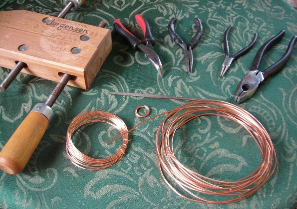
In this tutorial, I'll be making a toggle with a 10 AWG (12 SWG) 1/2" ID big copper ring, a 14 AWG (16 SWG) toggle bar, and 20 ga copper wire wrap.
We'll start with the big ring. If you're confident in the strength of your metal, you don't really need to wrap it, but it looks good and it's nice to have the guarantee. So get your big ring ready, close it, polish it if you like, but there's no need to solder unless you're paranoid. Which is okay. But not necessary.
If you're using a small gauge for your big ring, you may want to double-wrap it, splitring style. A single 20 ga ring will look (and maybe actually be) flimsy.
1. Cut off several inches of your thin, soft wire -- say six, and you can always trim later. Using roundnose pliers or a mandrel, make a double loop at about the midpoint. This will be the part that you use to connect the toggle to the rest of the chain, so make it just big enough to accomodate the rings in your main weave.
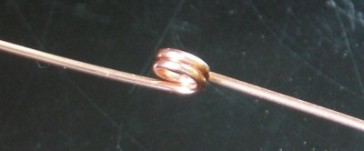
2. Again using roundnose pliers if you've got them, bend the tails of the wire around toward each other. Leave enough of a gap to slip the big ring down to rest by the double loop.
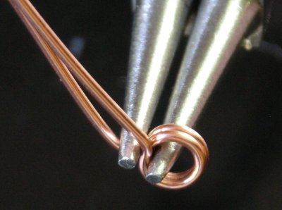 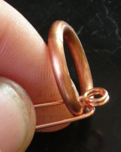
3. Now start wrapping the big ring with the tails of the wire. This will be a little challenging with two or three inches of wire to bend through the center of the ring, but just keep at it, and maybe find that vice/clamp/friend with pliers if you think it'll help. Oh and before you get too far, be sure that your double loop is centered on the closure of the big ring and sticking straight out.
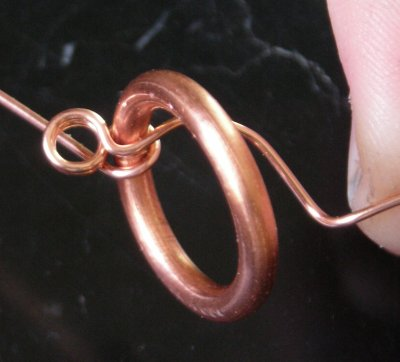
4. Just keep wrapping. It'll get easier as your wire tails get shorter. I generally wrap to the point where the double loop is snug, then wrap once or twice more, and finish with the wire ends pointing DOWN, away from the center of the ring (where they're less visible).
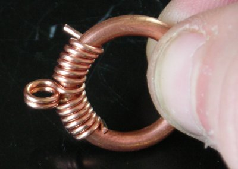 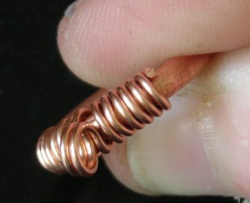
Yay! The first part's done! Now we make the handlebar.
5. Get the wire that's the same gauge as or slightly smaller than your big ring. Straighten it out and lay it across the diameter of the big ring. Cut it so that you have a fair amount of extra on either side, remembering that it's always easier to trim down than up at the end.
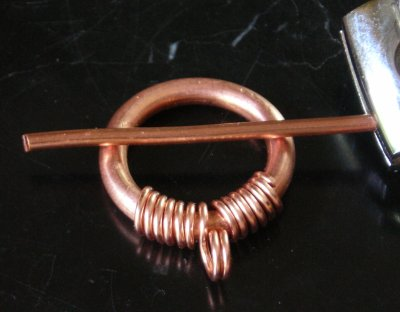
6. Straighten the wire as best you can, and then put a big V-bend in the very center.
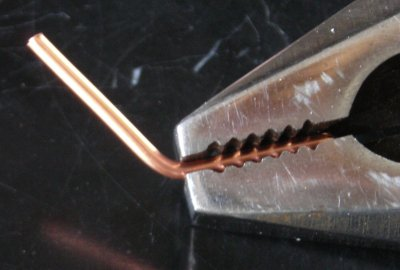
7. Now straighten it out on either side of the bend so that you've got a bike-handle shape. This is to give the bar some dimensionality, so your wire-wrap will have something to grip instead of just sliding off the end. *If you are using a small gauge, like 20 ga, you may want to skip the handlebar shape entirely and instead curl the very ends of the wire, as in the purple one.* Or you may use some entirely different shape. It's just important to have something to hold on to the wire wrap.
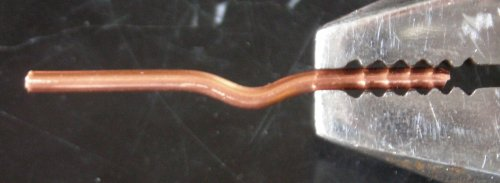 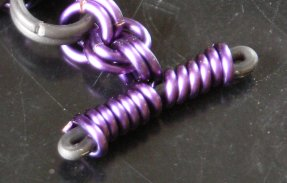
8. Okay now you know the drill, cut several inches of small wire, double loop in the middle, bend it back around and slide the handlebar in place.
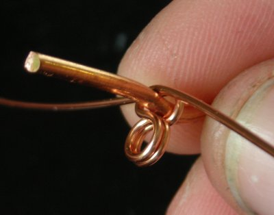
9. Easier to wrap this time than it was with the big ring. Remember as you wind the tails around to keep the double loop coming off the bottom of the handlebar.
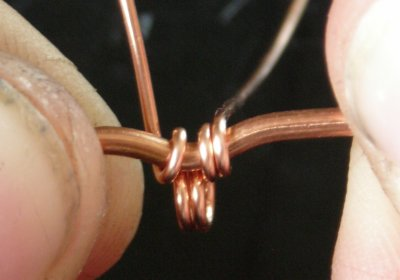
10. How far you wrap this one is up to you. You can do the whole thing, or just enough to keep it stable. With smaller gauges you may want to do the whole thing, for strength. Remember to finish with the tails facing down. Trim and wrap them snugly so they won't snag.
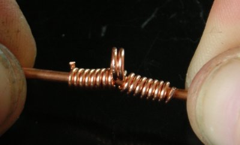
11. Final check against the big ring. Trim if necessary to get the bar even on both sides, and then I strongly, strongly suggest that you file the ends. Did I mention how strongly I suggest that you file the ends?
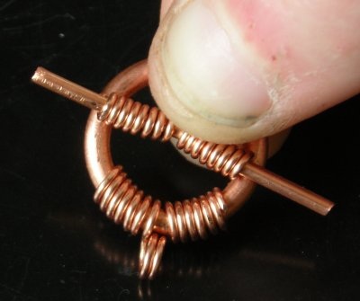 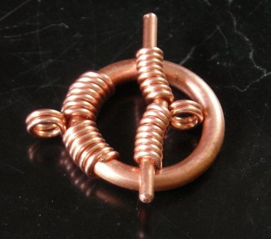
Now that you've learned this, the possibilities are endless.
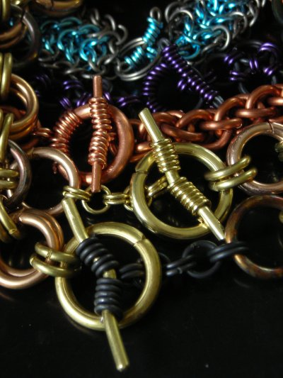